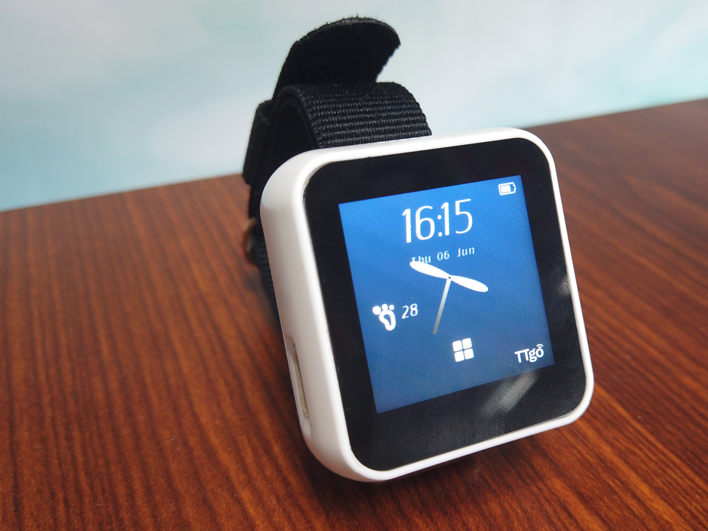

T-Watch Introduction¶



Hardware overview¶
1.Technical Parameters¶
T-Watch onboard:
1.54 inch LCD capacitive touch screen: ST7789V
Touch screen chip: FT5206
Three-axis accelerometer: BMA423
PMU Power Management: AXP202
RTC clock module: PCF8563

ESP-32 Master control：
Processors:
CPU: Xtensa dual-core 32-bit LX6 microprocessor, operating at 240 MHz
Ultra low power (ULP) co-processor
Memory: 520 KiB SRAM
Wireless connectivity:
Wi-Fi: 802.11 b/g/n
Bluetooth: v4.2 BR/EDR and BLE
Power supply：Type-C USB/Lithium battery
Operating Voltage：3.3V
Note
ESP32 was created and developed by Lexin Information Technology, a Shanghai-based Chinese company, and manufactured by TSMC using 40-nanometer technology. It is the successor to the ESP8266 microcontroller.
Boot demo video¶

Interface switching video¶

2. Appearance specifications¶


4. Pin definition¶